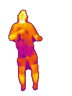

00 / XR Sensor Dossier
Designed & built by Jonathan Morse
Make invisible sensing spatial.
A Quest-based prototyping platform for turning thermal, RGB, and depth streams into readable mixed-reality context.
PlatformMeta Quest 3S
SensorsThermal / RGB / Depth
StackUnity / Android / C++ / OpenXR
StatusWorking system / Active research

Hardware subsystem
Physical sensor platform
Mounts, housings, targets, and assembly details that make external sensing repeatable on a Quest headset.